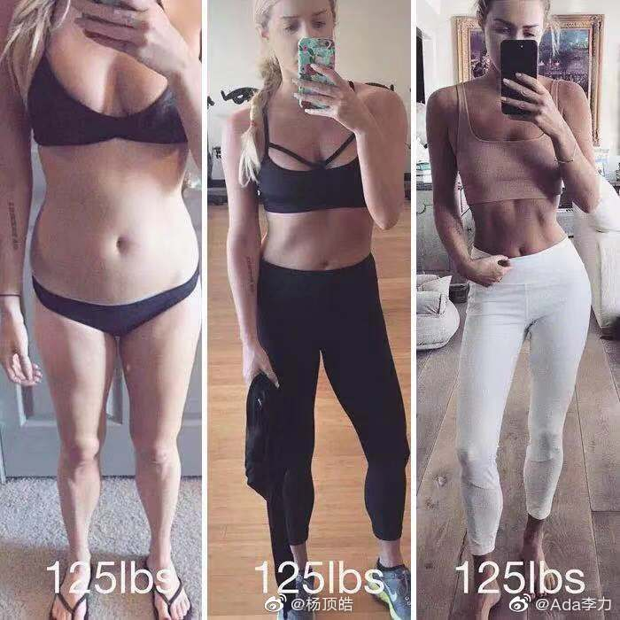

#健身的启示#
很长时间没见面的同学徐子来家，说我现在体型比上一次见面好很多，而明俊也在旁附和说我肚子明显小了很多。今年五月底规律健身以来，体重秤上的数字一直没什么变化，一度让我很沮丧，这两个人的反馈，终于让我相信了“体重是浮云”这句话。
其实自从开始了解健身知识，就知道体重并不是说明体型的最佳方式，但是多年来对减肥和体重过于关注，以及周围各种噪音影响，体重的高高低低，还是会很影响减脂和健身的心情。健身人士通常都会建议自拍，镜子中看到的体型，才是你真正的样子，而体重秤上的数字，根本不说明什么。
而且健身圈也会晒出大量相同人在同一体重下，不同的体型对比照片，来说明因为肌肉和脂肪不同比例，同一体重，会呈现出完全不同的体型结果。但这种对比案例，多数是国外舶来，加上国内健身圈里各种营销号的脑残式信息铺天盖地，让我一直放不下对体重的执念，也对体重是浮云这句话，将信将疑。
而我才开始规律做抗阻训练两个多月，每天也仅仅是不到30分钟的时间，自己在家用2公斤的小哑铃完成，就已经明显看到体型改善的效果，这让我对健身理论，从将信将疑状态，变得确信不疑。
相信，才会带来后期的持续执行力。而相信什么，很关键。
附图同一体重不同体型对比，来自@杨顶皓 感谢。
很长时间没见面的同学徐子来家，说我现在体型比上一次见面好很多，而明俊也在旁附和说我肚子明显小了很多。今年五月底规律健身以来，体重秤上的数字一直没什么变化，一度让我很沮丧，这两个人的反馈，终于让我相信了“体重是浮云”这句话。
其实自从开始了解健身知识，就知道体重并不是说明体型的最佳方式，但是多年来对减肥和体重过于关注，以及周围各种噪音影响，体重的高高低低，还是会很影响减脂和健身的心情。健身人士通常都会建议自拍，镜子中看到的体型，才是你真正的样子，而体重秤上的数字，根本不说明什么。
而且健身圈也会晒出大量相同人在同一体重下，不同的体型对比照片，来说明因为肌肉和脂肪不同比例，同一体重，会呈现出完全不同的体型结果。但这种对比案例，多数是国外舶来，加上国内健身圈里各种营销号的脑残式信息铺天盖地，让我一直放不下对体重的执念，也对体重是浮云这句话，将信将疑。
而我才开始规律做抗阻训练两个多月，每天也仅仅是不到30分钟的时间，自己在家用2公斤的小哑铃完成，就已经明显看到体型改善的效果，这让我对健身理论，从将信将疑状态，变得确信不疑。
相信，才会带来后期的持续执行力。而相信什么，很关键。
附图同一体重不同体型对比，来自@杨顶皓 感谢。
- 